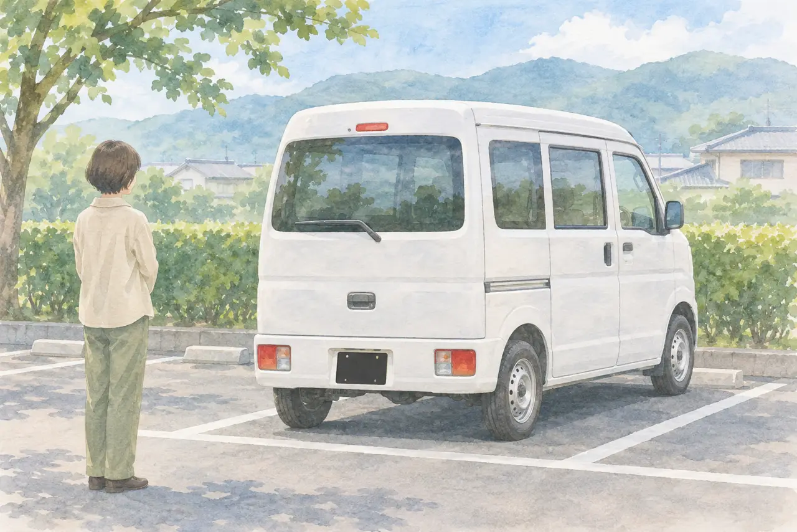
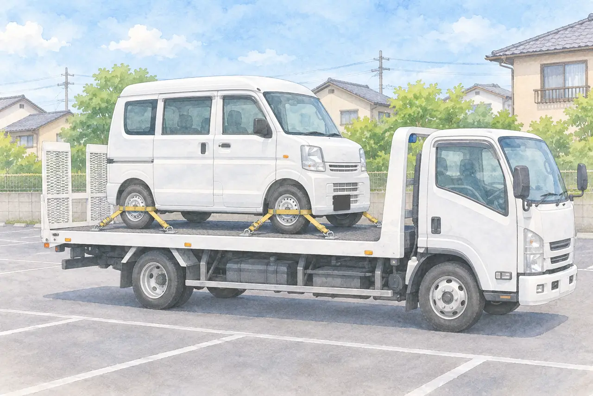

黒ナンバーの車をお持ちの方へ
黒ナンバーの軽自動車を手放すとき
先に必要な「連絡書」とは？東京の場合
公開
こんにちは、東京都足立区江北で自動車解体・廃車買取をしている「大崎商店 環七店」です。
「仕事で使っていた軽自動車を手放したい。黒ナンバーだけど、何か違うの？」
黒ナンバーの車を手放すときは、運輸支局で確認を受けた「連絡書」が必要になります。 車の引き渡し日や、その後の手続きに合わせて準備しましょう。
この記事の要点
- 黒ナンバーをやめる車の手続きには「連絡書」が必要です。 運輸支局で確認を受け、軽自動車検査協会に提出します。
- 大崎商店では、連絡書はお客様に取得をお願いしています。 最初のお電話で、準備する時期をご案内します。
- 車検が残っている軽自動車は、買取になることもあります。 廃車だけと決めつけず、先に相談してください。
① 黒ナンバーの車は、何が違う？

黒ナンバーは、荷物を運ぶ仕事に使う軽自動車（軽貨物）につく、事業用のナンバーです。個人事業主が使う軽バンに多いほか、乗用タイプの軽自動車でも、届出をして黒ナンバーにしている車があります。
ふつうの軽自動車（黄色ナンバー）と違うのは、事業の届出をしている車だという点です。手放すときも、事業の届出に関する手続きが先に必要になります。
② 連絡書とは？どこで受け取る？
連絡書（事業用自動車等連絡書）は、運輸支局の輸送担当が事業の届出などを確認したことを示す書類です。黒ナンバーをやめる車の手続きで、軽自動車検査協会に提出します。
東京の軽貨物事業の届出は、東京運輸支局の輸送担当（〒140-0011 品川区東大井1丁目12番17号）が窓口です。足立区の場合も、この窓口で確認を受けます。
東京運輸支局の案内では、出す物は次のとおりです。
| 場合 | 出す物 |
|---|---|
| 車が0台になる（事業をやめる） | 廃止届（正・控）／連絡書2枚／車検証（コピー可） |
| 台数を減らす（事業を続け、2台から1台など） | 経営変更等届出書（提出用・控え）／連絡書2枚／車検証（コピー可） |
| 車を入れ替える（減る分と増える分が同じ） | 連絡書（旧車・新車それぞれ提出用と控え）／旧車の車検証／新車の車検証または完成検査終了証（コピー可） |
提出方法や受付時間、最新の必要書類は、事前に東京運輸支局の輸送担当へ確認してください。郵送を希望する場合も、送付先や返信用封筒などの用意を確かめましょう。
③ 手続きの順番
- 運輸支局で、廃止届（または変更届）を出して、連絡書を受け取る
- 軽自動車検査協会（足立ナンバーは、足立支所）で、車の手続きをする
連絡書を受け取ってから、軽自動車検査協会での手続きへ進みます。連絡書の様式には「発行の日から1ヶ月」と有効期限が記載されています。 車の引き渡し日と手続きの予定を依頼先に確認し、取得する日を決めましょう。
④ 大崎商店の場合：黒ナンバーの軽自動車

大崎商店では、黒ナンバーの軽バンをお持ち込みいただいたことがあります。 個人事業主の方の車でした。
大崎商店では、連絡書はお客様ご自身で取得していただいています。 車を手放す流れに合わせて、いつ・何を用意するかをお電話でご案内します。
お持ち込みいただいた軽バンは、車検が少し残っていたため、買取になりました。 軽バンに限らず、車の種類や状態によっては、買取になることがあります。廃車だけと決めずに、まずご相談ください。車の状態を伺い、買取になるかどうかをご案内します。
まず、環七店（03-3854-4141）へお電話ください。車の種類、車検の残り、置いてある場所を伺います。
積載車は、動かない車も、ワイヤーで荷台に引き上げて積むことができます。ただし、積載車は1台です。細い道や、車を積み込む場所がない現場では、お断りすることがあります。その場合も、追加の費用はいただきません。
大崎商店では、
- 解体費用・手続き代行費用・印紙代は、別請求しません
- 足立区内は、引き取り無料
- 足立区外も、買取価格がつかない車は、環七店から片道約30分圏内は引き取り無料（目安です）
- 買取価格がつく車は、圏外でも、所在地と車の状態によっては無料で引き取り（事前にご案内します）
- 車によっては、引き取り当日その場で現金買取もできます
- 車のお持ち込みは、どこからでも歓迎（基本は環七店。日時は、事前にお電話でご相談ください）
解体作業は、解体業の許可を受けた入谷店で行います。
ご自分の車の場合が気になったら、お気軽にご相談ください。車の状態と置き場所を伺い、ご案内します。
電話で相談する03-3854-4141よくある質問
Q. 連絡書は、手放す日までに必要ですか？
A. 連絡書は軽自動車検査協会での手続きに使います。引き渡し日と書類をそろえる日程は、最初のお電話でご相談ください。大崎商店では、お客様ご自身で取得をお願いしています。
Q. 事業をやめるわけではなく、車を1台減らすだけです。
A. 台数を減らす場合は、東京運輸支局の案内では、廃止届ではなく変更届を出します。連絡書は、同じように必要です。
Q. 荷台や車内に、荷物や備品が残っています。
A. 引き渡しの前に出しておいてください。車ごと解体する場合、車の中に残ったものは、基本的に車と一緒に処分します。
Q. 車検証がありません。
A. 黒ナンバーの事業用車は、東京運輸支局の輸送担当と軽自動車検査協会に、再交付の要否や必要書類を事前に確認してください。車検証をなくした場合の基本
Q. 現場に来てもらってから、断られることはありますか？
A. 積載車が入れない道や、車を載せられない場所では、お断りすることがあります。その場合も、追加の費用はいただきません。電話で、車の状態・場所・道の広さを先に伺い、断る事態をできるだけ減らします。
黒ナンバーの軽自動車のご相談は、大崎商店へ
電話で相談する 03-3854-4141メールで相談する（フォーム）大崎商店 環七店
電話：03-3854-4141
〒123-0872
東京都足立区江北7丁目1−3
営業時間：月〜土 10:00〜18:00
休業日：日曜・祝日
環七沿い／舎人ライナー
西新井大師西駅
大崎商店 入谷店
電話：03-3899-2837
〒121-0836
東京都足立区入谷7丁目5−11
営業時間：月〜土 9:30〜17:30
休業日：日曜・祝日・第2土曜
黒ナンバーの軽自動車のご相談は、環七店へ。 黒ナンバーであること、車検の残り、置いてある場所をお伝えください。
くわしい条件と出典（読みたい方向け）
- 東京運輸支局の案内。廃止・減車・代替（入れ替え）の必要書類は、ハンドブック冒頭の表をご確認ください。連絡書は必要事項を記入し、輸送担当の確認を受けて使います。軽貨物の届出・様式／ハンドブック／減車用連絡書と記載例
- 東京運輸支局の所在地。輸送担当への問い合わせは、代表電話03-3458-9231の音声案内に従ってください。東京運輸支局の所在地・連絡先
- 軽自動車検査協会での手続き。解体した車の解体返納では、事業用自動車等連絡書が必要です。ほかの書類や手続きは、車の状態に合わせて確認してください。軽自動車検査協会・解体返納／一時使用中止と解体返納の違い
- 会社名義の車：法人の車は、会社の車（社用車）を廃車にするには？の記事をご覧ください。
- 車検証の所有者の確認：所有者がリース会社やローン会社の場合は、ご自身だけでは進められないことがあります。電話で、車検証の所有者と使用者を伺います。くわしくは、ローンが残っている車は廃車できる？の記事をご覧ください。
- 引き取りの条件：積載車は1台で、複数の引き取りを同時には行っていません。すぐに伺えるかは、そのときの仕事の状況によります。到着の日時は、電話で事前にご案内します。引き取りの範囲は、出張引き取りの対応エリアの記事をご覧ください。
※掲載画像はAIで生成したイラストです。実際の店舗・人物・車両とは異なります。